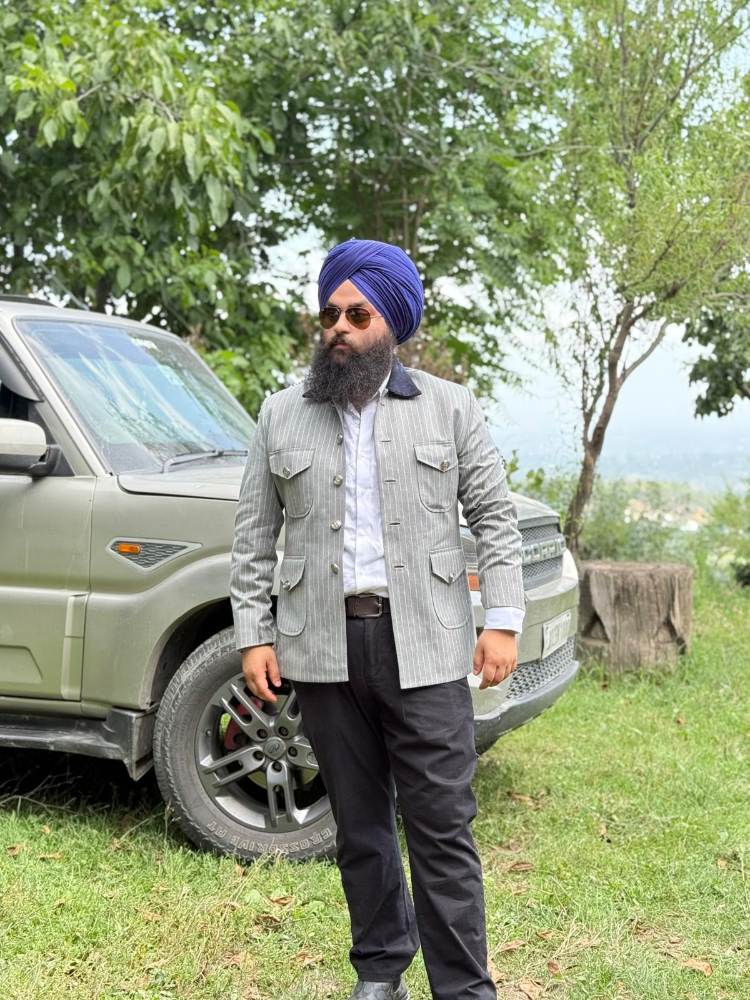

Ranjyot Singh

Summery
Motivated and detail-oriented Web Developer with hands-on experience in designing, building, and maintaining responsive websites and applications. Skilled in front-end and back-end development, with a strong foundation from an Advanced Diploma in IT Innovation and Design. Proficient in modern technologies such as HTML, CSS, JavaScript, React, Node.js, and databases. Adept at problem-solving, collaborating in team environments, and delivering user-focused solutions. Passionate about continuous learning and applying innovative approaches to create efficient, scalable, and visually appealing digital products.
Education
- Undergraduate Program in IT Innovation and Design
Conestoga College, Ontario, Canada
- Senior Secondary Education (Grade 12)
Paragon 69 Mohali CBSE
- Secondary Education (Grade 10)
DPS Leh Ladakh CBSE
Work experience
-
Web Deveplor
Web Liquid, Chandigarh
- Assisted in creating and updating website pages using HTML, CSS, and JavaScript.
- Helped maintain website content and images on client websites.
- Tested websites for layout, functionality, and basic browser compatibility.
Skills
- Frontend: HTML5 (learning/revising), CSS3 (basic), JavaScript (beginner)
- Tools & Platforms: VS Code, Git / GitHub, Basic Chrome DevTools
- Other: Learning project-based development; building portfolio projects on GitHub
Awards
- Emerging student of the symester at conestoga 2023
Others